.webp)
Наш родны край, край Прынямоння,
Зямля працоўнай ратнай славы!
Табою, Уздзеншчына, сення
Мы ганарыцца маем права…
З верша «Наша Уздзеншчына» П. Махнача
В самом центре Беларуси расположен живописный и неповторимый уголок Родины – Узденщина. Это край древних курганов и поселений, восславленный во все времена от князей Кавечинских, Радзивиллов, что властвовали здесь в минувшие столетия, до талантливых современников, которыми гордится эта прекрасная земля.
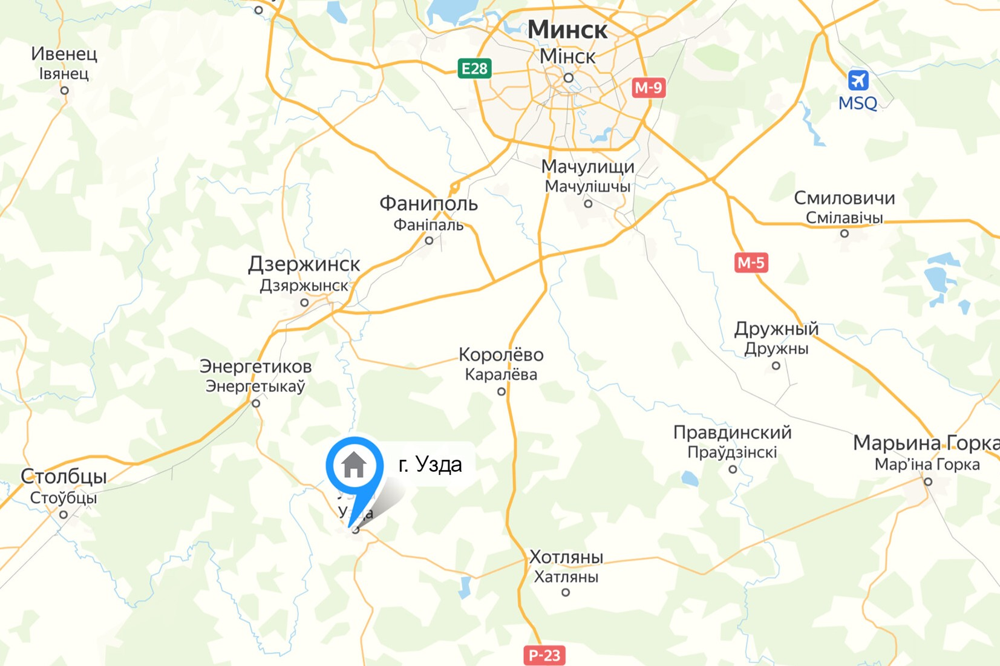
История города
В седую древность своими корнями уходит история Узды.
Не раз оказывалась земля наша на перекрестке исторических событий. В этих местах, на реке Неман, у деревни Могильно в 1284 г. произошла величайшая битва 13 столетия во время становления Великого Княжества Литовского. Не обошли наш край татаро-монгольское нашествие и наполеоновские грабители. Территория района формировалась на протяжение сотен лет. В IX - первой половине ХIII вв. наши земли находились на границе Полоцкого и Туровского княжеств, долгое время входили в состав Великого княжества Литовского, а после второго раздела Речи Посполитой являлись частью Игуменского повета Минской губернии.
Тайна названия местечка Узда
Версии
- Из легенды о татарском хане и золотой уздечке
- От балтийского и татарского языков
- От литовского слова «Узла»
- От татарского слова «Усда»
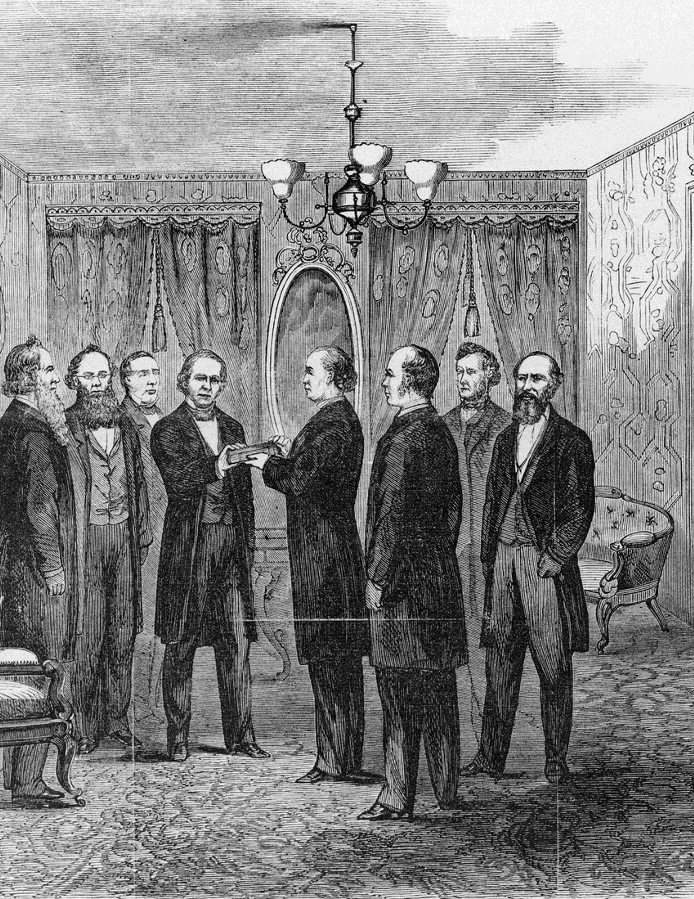
Поселение Узда упоминается в письменных источниках в середине XV в., причем как частное владение.
Вот, что говорится в документе этой метрики, датированном 19 июля 1465 г.:
«и Корсаковичам Михаилу, Ваську, Ивашку король обратился потому, что Корсак, отец их, держал прежде того Узду. Приказал пан Михаила, канцлер, а писал Якуб...»
В документе упоминаются три сына Корсака. Но еще прежде, до них, первым из упоминаемых владельцев Узды был их отец.
В 1570 г. Узда вместе с селом Кухтичи была уже наследным владением Несвижских изгнанников протестантов братьев Ковячинских. Здесь они помогали Симеону Будному, который издал несколько десятков книг, в том числе в 1570 году и первую Библию на белорусском языке.
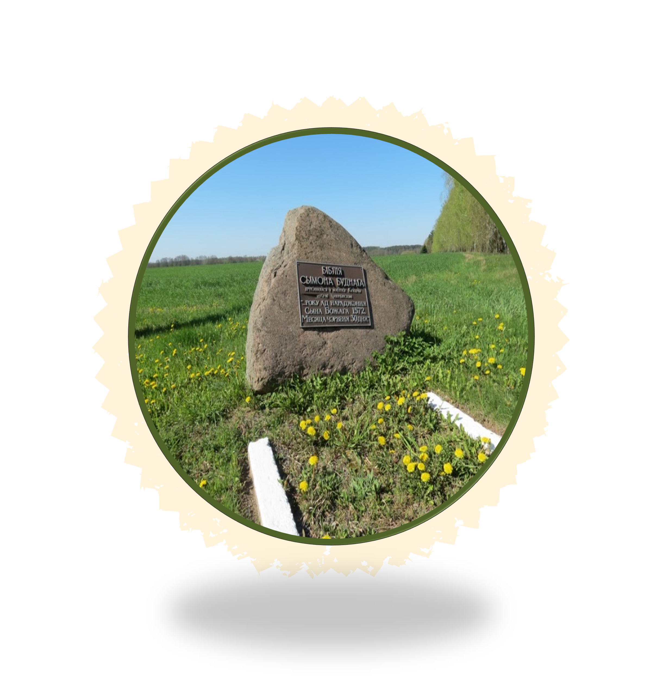
Мемориальный камень Сымону Будному и его Библии
Узда в те времена значилась «местом земским» - частновладельческим местечком, принадлежащим тем же Ковечинским. Благодаря им Узда стала самым настоящим портовым городом!
Что же было с этим имением дальше?
Имение Кухтичи в 1690-м году стало собственностью рода Завишей. Узда перешла к этой фамилии ещё раньше – уже в 1667 г. она значится собственностью маршалка Великого княжества Литовского Кристофа Завиши. Надо сказать, что впоследствии Завишам стала принадлежать вся территория нынешнего Узденского района.
Здесь же, в усадьбе Кухтичи, родился известный археолог Ян Казимир Завиша.
Когда Ян Казимир Завиша стал владельцем Кухтичей, то решил построить здесь своё родовое гнездо. И пригласил своего друга архитектора Карло Спампани. Тот освоил бюджет на славу. Откатов тогда не существовало, поэтому стараниями итальянского архитектора поместье было построено большое и красивое. С конюшнями, парком и водяной мельницей. Многое сохранилось до наших дней, но, к сожалению, пребывает не в лучшем состоянии.
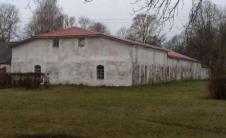
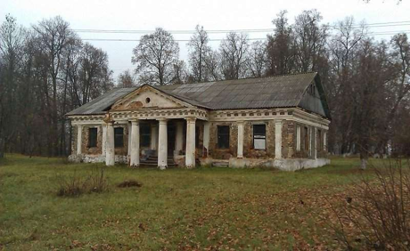
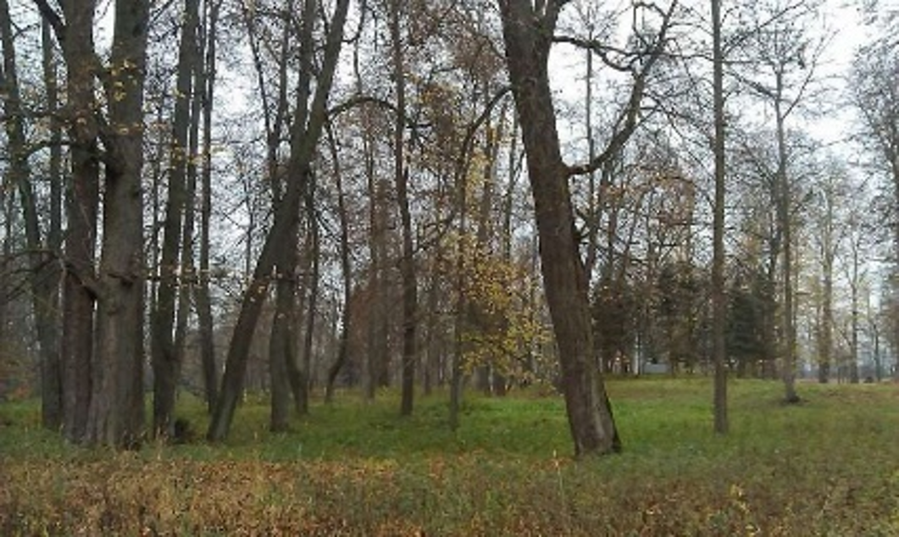
Узда и Кухтичи помнят свою заботливую хозяйку, известную меценатку княгиню Магдалену Завиша (больше известную как Магдалена Радзивилл). Магдалена ЗАВИША и Николай РАДЗИВИЛЛ поженились в марте 1906 г., но их семейное счастье длилось лишь восемь лет. Князь погиб в 1914 г. в Восточной Пруссии, и его похороны стали последним значимым событием в судьбе имения Кухтичи и Кальвинского сбора.
А в 1958 году сюда переехал Пинский техникум сельского хозяйства. И тут поместье Завишей помогало на первых порах развитию образования. Сейчас училище носит гордое название «Узденский государственный сельскохозяйственный профессиональный лицей», и учатся здесь на швей, парикмахеров и агрономов около 600 человек. Раз в 10 больше, чем коренных жителей Кухтичей-Первомайска.
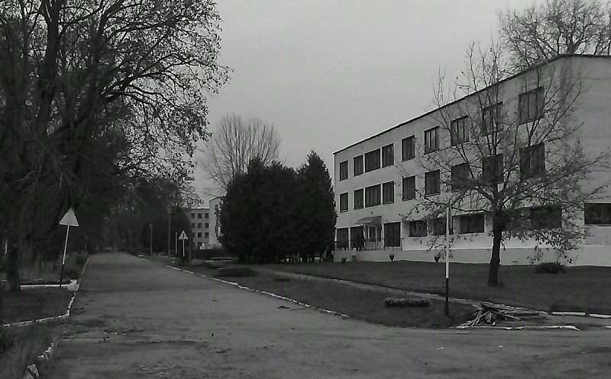
На протяжении 19 века в Узде не происходило каких-либо сильных изменений. Даже количество дворов в местечке оставалось примерно одинаковым.
По национальному составу в 1884 году в Узде насчитывалось 14 дворов белорусских, 18 дворов татарских и 102 двора еврейских. В местечке было всего несколько улиц.
Достопримечательности города Узда
Кальвинский собор
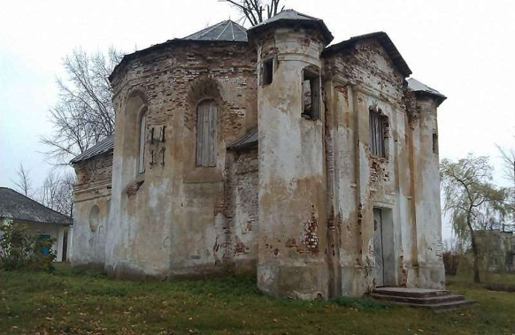
Памятников, подобных ему, сегодня только два – в Заславле и Сморгони.
Cтаринная узденская лавочка 1913 года
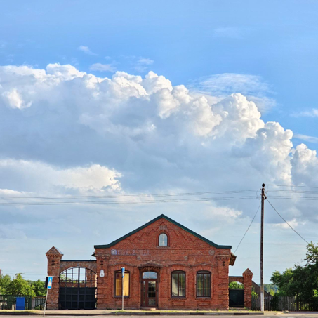
На фасаде ещё видны следы торговой надписи.
Cтаринная узденская школа 1936 года
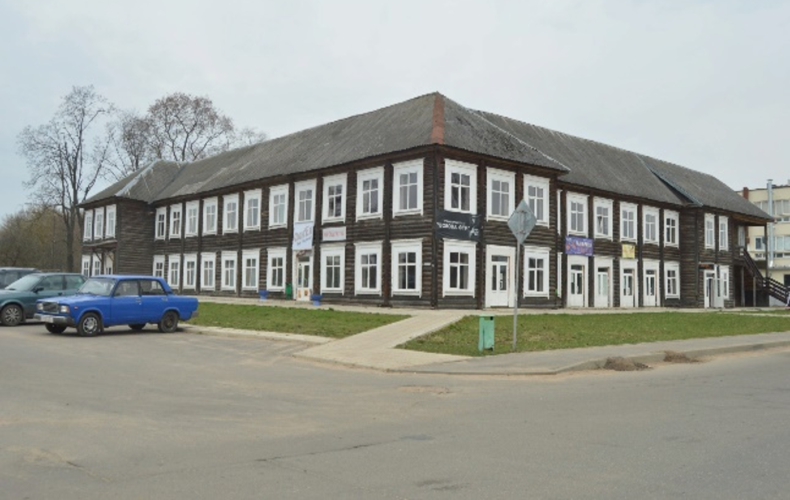
Здание сохранилось до сих пор, но признано аварийным.
Костёл Отыскания Святого Креста
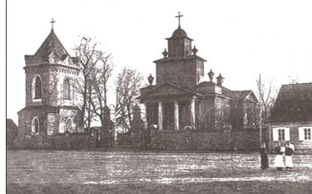
Снимок 1919 г.
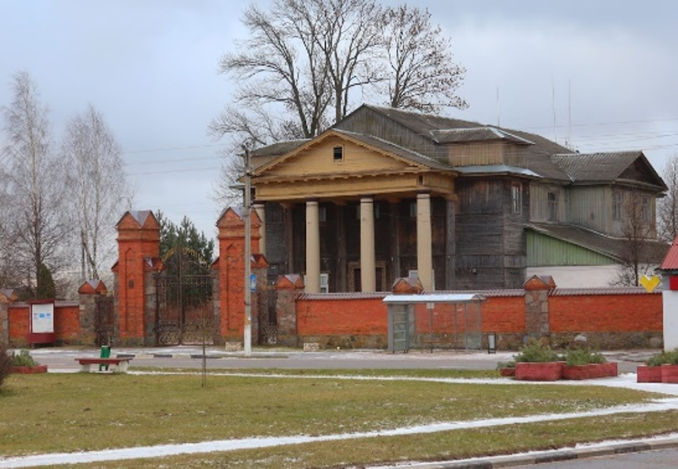
Снимок ноябрь 2023года
Церковь Святых апостолов Петра и Павла
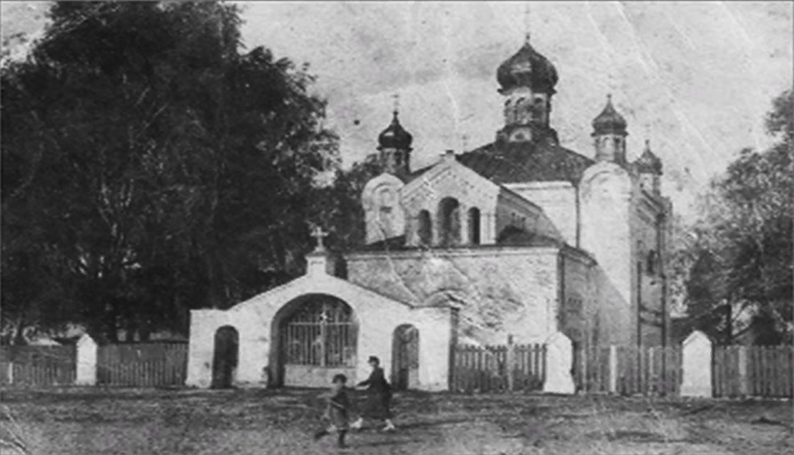
1918 г.
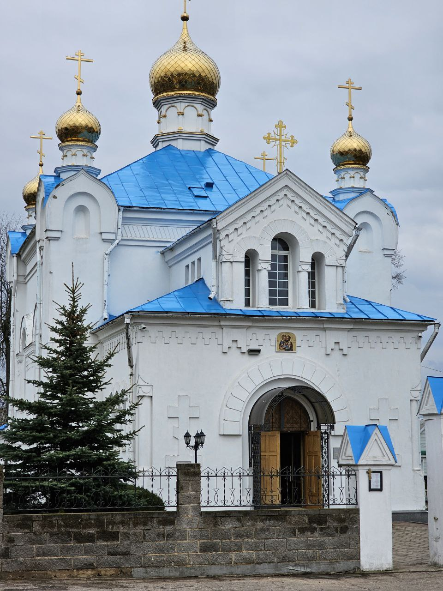
2023 г.
Усадьба Наркевичей-Йодко
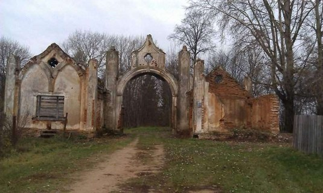
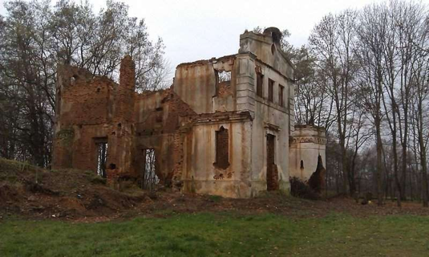
2023 г.
На данный момент идёт рестоврация
Экономика, услуги и предприятия города Узда
Сегодня Узденский район благодаря стараниям тружеников разных поколений представляет собой динамично развивающийся регион с современной инфраструктурой и эффективным сельскохозяйственным производством.
Ведущая роль в экономике района принадлежит сельскому хозяйству, которое специализируется на производстве молока и мяса, выращивании зерновых и зернобобовых культур, рапса и картофеля.
Динамично развивается промышленное производство и предпринимательская деятельность. Производственный цех Узденского райпо под брендом «Славяночка» выпускает хлебобулочные, кондитерские, колбасные и макаронные изделия, ООО «Марк Формэль» специализируется по пошиву бельевого и верхнего трикотажа.
Развитая сеть предприятий торговли, медицинских учреждений, коммунального и транспортного хозяйства обеспечивают выполнение социальных стандартов по обслуживанию населения.
В систему образования наряду с общеобразовательными школами и дошкольными учреждениями входят гимназия, центр детского творчества, центр детского туризма и экскурсий, центр коррекционно-развивающего обучения и реабилитации, социально-педагогический центр, санаторная школа-интернат. Специалистов для агропромышленного комплекса готовит Узденский государственный сельскохозяйственный профессиональный лицей. 14 творческих коллективов района удостоены почетного звания «народный» и «образцовый».
Сегодня они ведут активную концертно - гастрольную деятельность, участвуют в конкурсах, выступают на районных, областных, республиканских сценах.
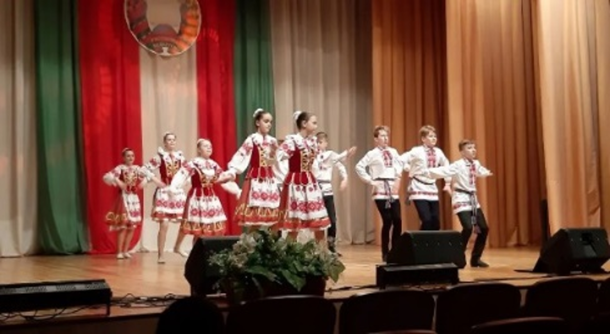
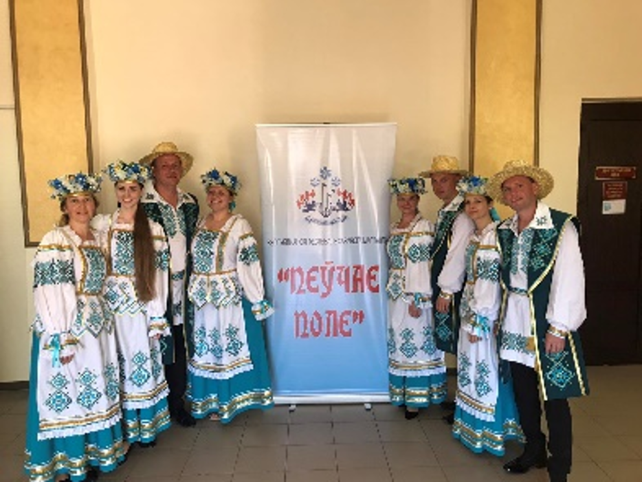
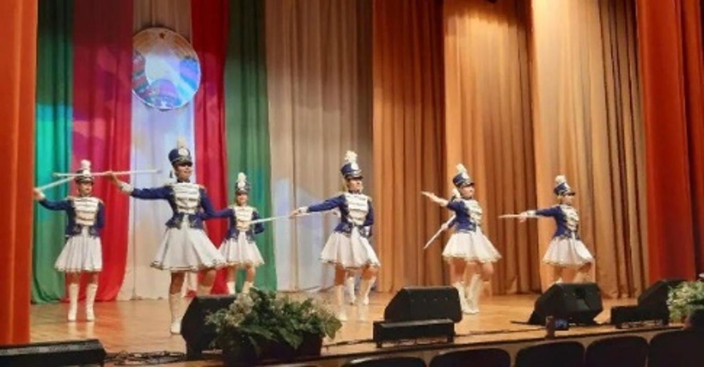